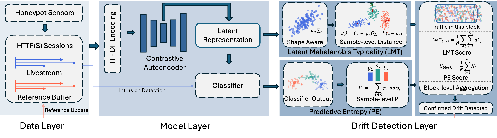

Yuanyuan Zhou, Anna Maria Mandalari (University College London)
Abhishek Mishra (INSA-Lyon, Inria)
Ryu Kuki, Takayuki Sasaki, Katsunari Yoshioka (Yokohama National University)
Last updated: Jan 2026

Web attackers and tooling evolve continuously, degrading intrusion detection models as their internal representations fail to adapt. Existing drift detectors are brittle in production, either flooding operators with false alarms or missing genuine, structural shifts. We introduce LANTERN, an interpretable, dual-channel drift monitor that diagnoses when and why models degrade using two complementary indicators: Latent Mahalanobis Typicality (LMT), which captures deformation in the representation space, and Predictive Entropy (PE), which quantifies decision level confusion. We evaluate LANTERN on 32.9 million continuous HTTP(S) requests collected over 7 months by a large-scale distributed honeyfarm and find that prominent state-of-the-art detectors are operationally unviable, generating thousands of false positives. In contrast, LANTERN's signals align tightly with true degradation: LMT attains a correlation of r=0.938 with F1 score, and our adaptive deployment maintains stable accuracy over time with only 1.93% triggering rate, ending the period with an F1 score more than 10% higher than a static model. Beyond statistical metrics, LANTERN uncovers the operational roots of drift by identifying acute structural shifts such as a large centralized distribution event and tracing the evolution of drift associated exploit behaviours through longitudinal analysis. These results position LANTERN as a production ready and interpretable monitor for web intrusion detection under evolving threats.
Paper title: LANTERN: Diagnosing Web Intrusion Drift under Evolving Attackers
Authors: Yuanyuan Zhou (UCL), Abhishek Mishra (INSA-Lyon, Inria), Ryu Kuki (YNU), Takayuki Sasaki(YNU), Katsunari Yoshioka(YNU), Anna Maria Mandalari (UCL)
Full Text (PDF): pre-print available
Code: available on GitHub
Presentation at RIPE 90
waiting for publication